i.e., convincing people to take a chance on you
Professional writing is purposeful communication to an audience
Know the purpose
Know the audience
Everything you write should serve your purpose and be understood by your audience
Clarity comes first
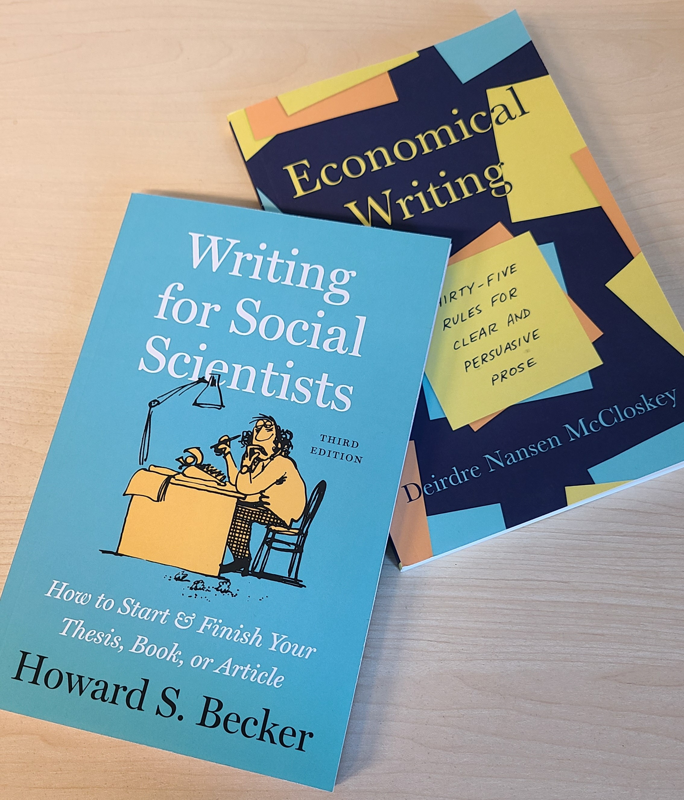
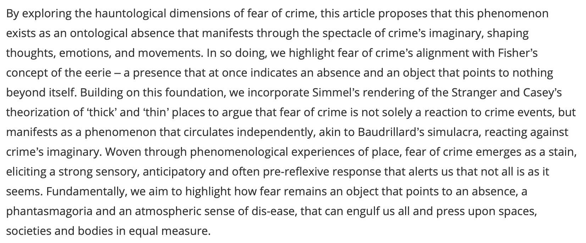
Clarity comes first
Read good books on writing →
Read and emulate good writers
Read your work out loud
Have others read your work
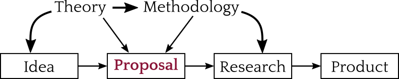
Proposals are:
Reasons for proposals:
Convincing someone it is worth doing and you can do it
Before you start, you need to ask…
What proposals do they accept?
Who is going to read the proposal?
What are their expectations and requirements?
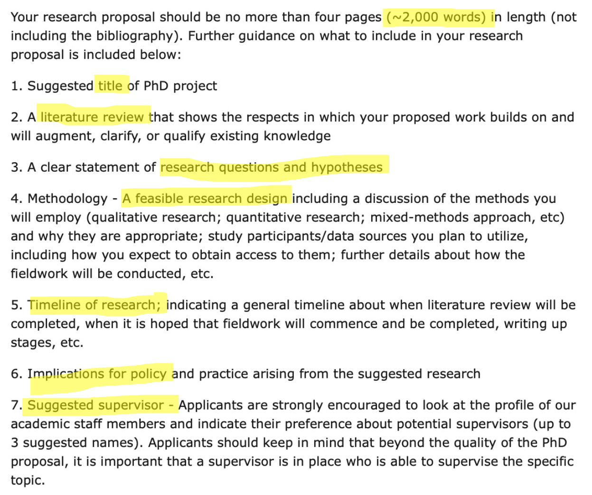
Adapted from Denscombe (2012) Research Proposals: A Practical Guide
Goals:
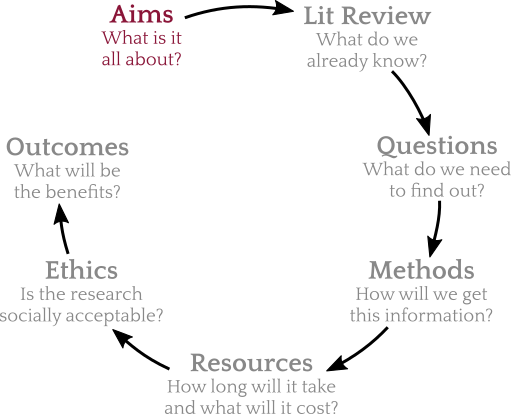
Neighborhood disorder is also highly-correlated with crime rates, which has led to a significant controversy in the social sciences over the proper interpretation of the correlation. Does the correlation reflect a causal relationship, in which social and physical disorder increases the likelihood of norm-violations and crime, as broken windows theory suggests? Or does the correlation reflect a spurious relationship, in which the correlation disappears when the confounding variable, neighborhood collective efficacy, is controlled? The answer to this question has important theoretical and policy implications. This project examines this controversy using mixed methods: field experiments embedded in neighborhoods that are diverse on measures from the U.S. Census and the Seattle Neighborhoods and Crime Survey.
Goals:
Approach:
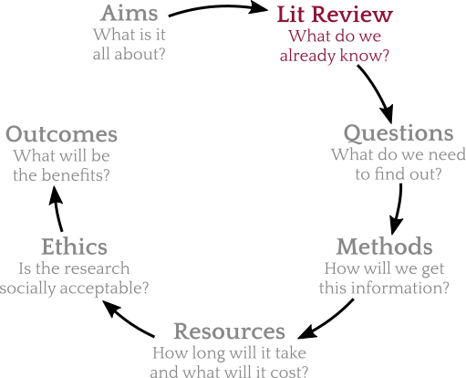
A feature of recent research on broken windows, collective efficacy, and social capital is that it uses a variety of research designs, including household surveys within neighborhoods, systematic social observation, and field experiments. Viewed separately, these research designs have specific strengths and weaknesses involving causality, endogeneity, and external validity. By embedding a series of experiments within neighborhoods, we hope to capitalize on the unique strengths of distinct methods and overcome many of their weaknesses.
Goals:
Approach:
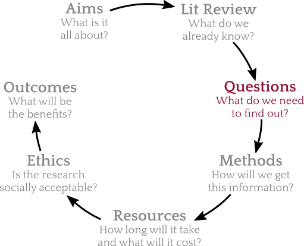
(a) Changing Exposures: How does exposure to guns and gun violence as well as gun use vary throughout childhood, adolescence, and early-to-mid adulthood? How has it changed over the last 25 years? In particular, how do exposures differ by cohort and race?
(b) Changing Risk and Protective Factors: To what extent have the main individual, family, and community risk and protective factors of gun violence evolved and changed over the last 25 years?
(c) Consequences: What are the long-term consequences of personal victimisation and exposure to neighbourhood gun violence for mental and physical health and criminal involvement, and how do they vary by race?
Goals:
Describe:
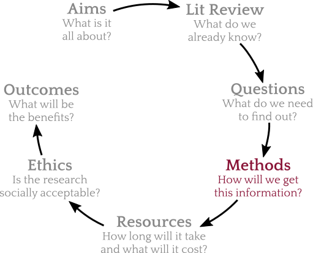
For the first objective, measuring changing exposures, Generalized Linear Mixed Models (GLMM) will be used to estimate growth curves of stability and change in probabilities of reporting four measures of exposure: (1) carrying a concealed firearm, (2) shooting or shooting at someone, (3) being shot or shot at, and (4) seeing or hearing someone else get shot or shot at. Growth curve analyses will also be used to examine neighbourhood exposure to gun violence—defined as the annual rate of shootings in the participant’s neighbourhood from official police records. Analyses will also examine how variation by age, race, ethnicity, and socioeconomic status (SES) in exposure to gun violence interact with historical change.
Goal:
Describe:
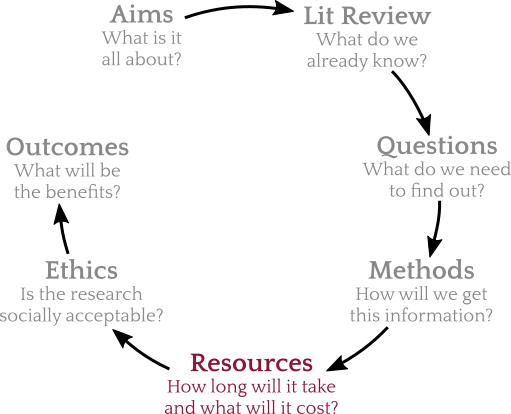
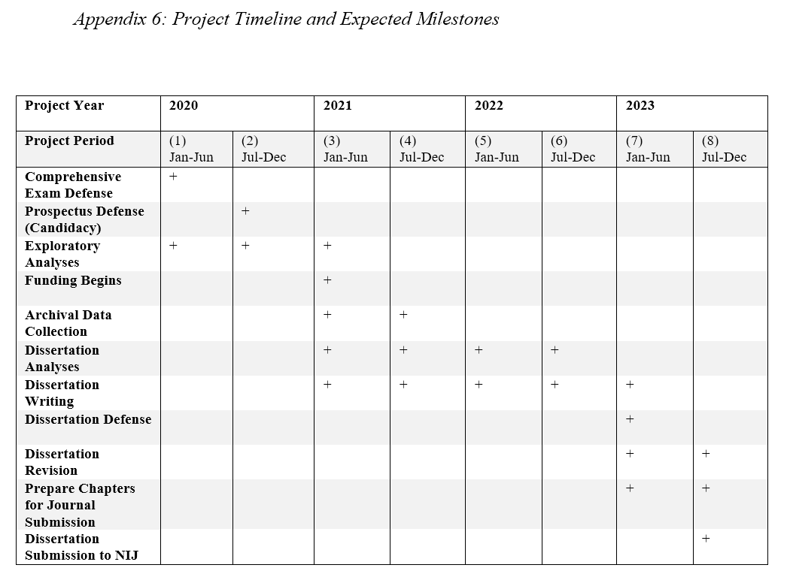
Describe:
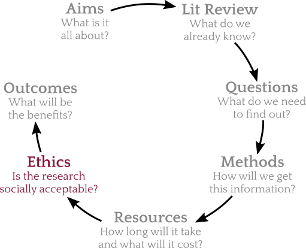
The project has already undergone an extensive ethical review within the University of Cambridge, and fieldwork will be conducted in line with the University’s risk-assessment policies. The PI’s field experience enables her to manage the ethical, practical, and emotional complexities of this research, seeking assistance and consultation from peers, specialists, and the University as and if new scenarios or complications arise. The research team has previously collaborated, including on pilot interviews with defectors. Direct prior experience is crucial given the sensitivity and complexity of this group. In addition, having already worked together reduces the risk of miscommunication between researchers and has allowed the team to refine procedures and safety protocols.
The interview guide is designed to avoid any risk of self-incrimination. Participants are explicitly advised at the outset not to disclose personal details that could identify them or to provide identifiable information about others. Before each interview, participants will receive clear information about the project, its aims, funding sources, and the intended use of the collected material. They will also be informed of their right to withdraw from the study or pause the interview at any point, without needing to provide a reason.
Describe:
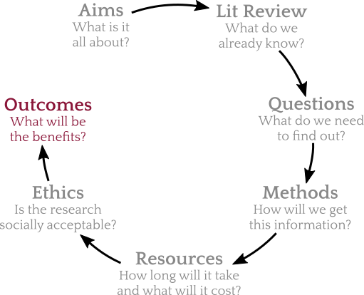
The research is intended to produce three peer-reviewed journal articles, one focusing on each of the three research questions of the proposed study, targeted at outlets such as Proceedings of the National Academy of Sciences, Criminology, and The Lancet. Findings will also be disseminated in accessible briefs for policymakers and practitioners, which the lead applicant has experience preparing, as well as op-eds and blog posts such as The Conversation. Finally, the data will be archived in a public repository, and code used to prepare the data and conduct analyses will be made publicly available on the applicant’s GitHub site. This will ensure research transparency and facilitate replication and extension of the research products by other researchers.
Example dissemination activities:
Every audience will weight these differently!